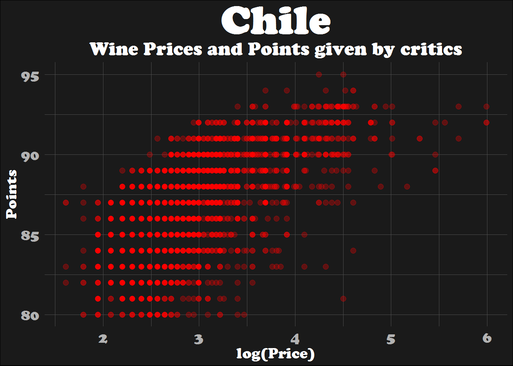
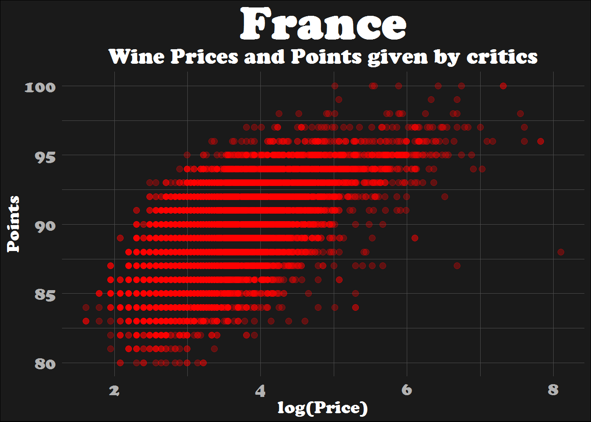
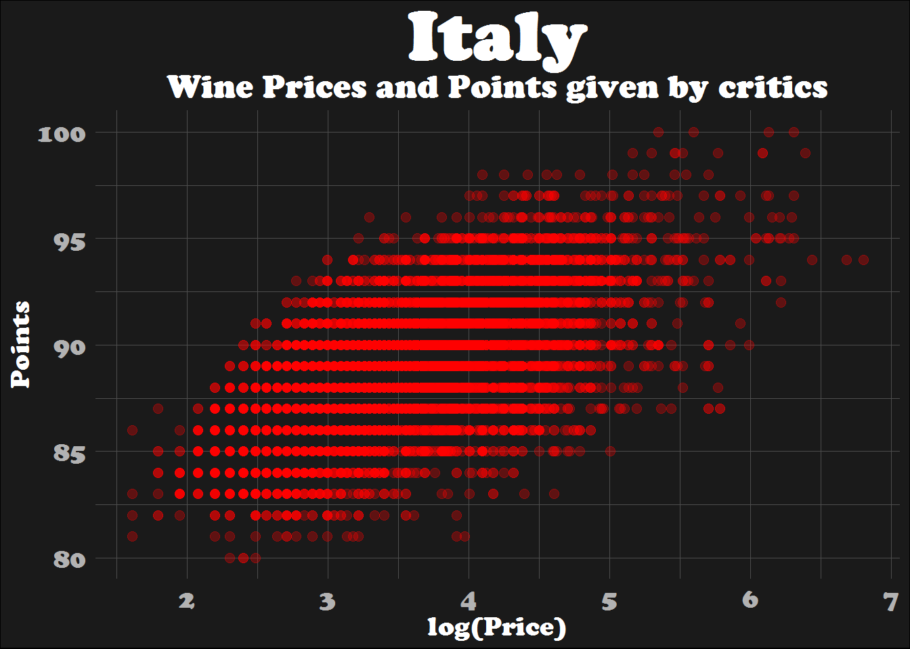
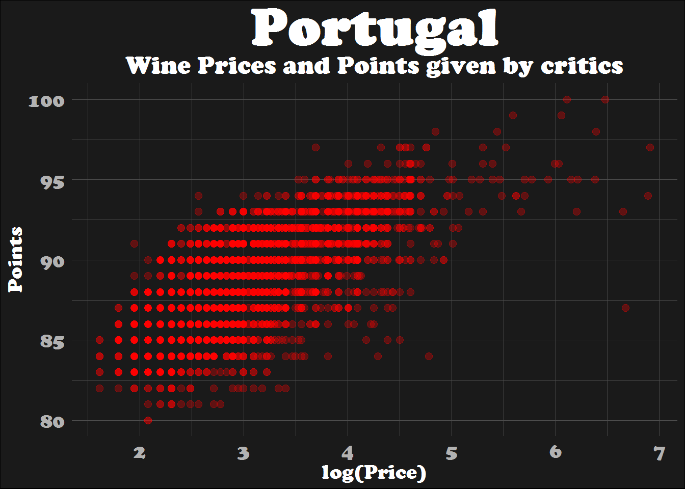
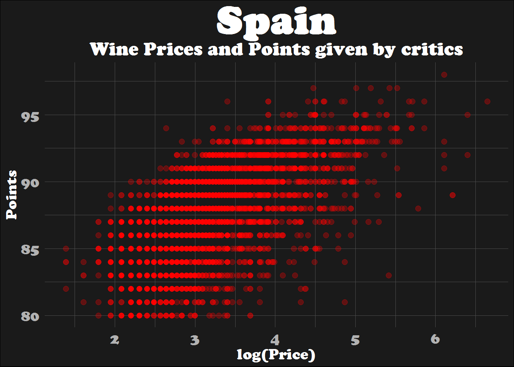
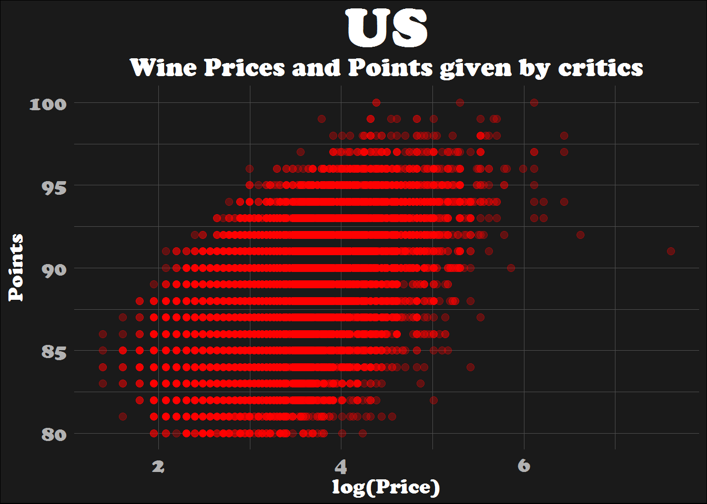

Iteration made easier: A case study with purrr
This tutorial will be about iteration in R. More specifically, I’ll focus on some functions of the purrr package. Feedback is welcomed. The dataset I will manipulate is from the week 22 of TidyTuesday and it’s called Wine Ratings. This dataset is very informative about types of wines and its origins as well as the respective prices and points attributed. Moreover, it’s very detailed in regard to critical reviews and information about critics.
To begin, let’s load the libraries that we’ll use for this post.
library(tidyverse) # manipulate, iterate, and visualize data
library(fs) # create directory
library(here) # set a path to your file
library(data.table) # in this case it's used to write and open files
library(ggdark) # ggplot2 theme
library(extrafont) # add fonts
library(hrbrthemes) # add fonts in this caseNow, we’ll open our dataset.
# open dataset
wine_ratings <- fread("https://raw.githubusercontent.com/rfordatascience/tidytuesday/master/data/2019/2019-05-28/winemag-data-130k-v2.csv")For tutorial purposes, let’s create 3 different datasets based on the wine_ratings dataset and put them together as a list, called wine_list.
# create 3 datasets
# wine1 with colums 2 to 7 of wine_new
wine1 <- wine_ratings %>%
select(2:7) # delete column 1
# wine2 with colums 8 to 11 of wine_new
wine2 <- wine_ratings %>%
select(8:11)
# wine3 with colums 12 to 14 of wine_new
wine3 <- wine_ratings %>%
select(12:14)
# create list with the 3 datasets
wine_list <- list(wine1 = wine1, wine2 = wine2, wine3 = wine3)
head(wine_list)## $wine1
## country
## 1: Italy
## 2: Portugal
## 3: US
## 4: US
## 5: US
## ---
## 129967: Germany
## 129968: US
## 129969: France
## 129970: France
## 129971: France
## description
## 1: Aromas include tropical fruit, broom, brimstone and dried herb. The palate isn't overly expressive, offering unripened apple, citrus and dried sage alongside brisk acidity.
## 2: This is ripe and fruity, a wine that is smooth while still structured. Firm tannins are filled out with juicy red berry fruits and freshened with acidity. It's already drinkable, although it will certainly be better from 2016.
## 3: Tart and snappy, the flavors of lime flesh and rind dominate. Some green pineapple pokes through, with crisp acidity underscoring the flavors. The wine was all stainless-steel fermented.
## 4: Pineapple rind, lemon pith and orange blossom start off the aromas. The palate is a bit more opulent, with notes of honey-drizzled guava and mango giving way to a slightly astringent, semidry finish.
## 5: Much like the regular bottling from 2012, this comes across as rather rough and tannic, with rustic, earthy, herbal characteristics. Nonetheless, if you think of it as a pleasantly unfussy country wine, it's a good companion to a hearty winter stew.
## ---
## 129967: Notes of honeysuckle and cantaloupe sweeten this deliciously feather-light spätlese. It's intensely juicy, quenching the palate with streams of tart tangerine and grapefruit acidity, yet wraps up with a kiss of honey and peach.
## 129968: Citation is given as much as a decade of bottle age prior to release, which means it is pre-cellared and drinking at its peak. Baked cherry, cocoa and coconut flavors combine gracefully, with soft, secondary fruit compote highlights.
## 129969: Well-drained gravel soil gives this wine its crisp and dry character. It is ripe and fruity, although the spice is subdued in favor of a more serious structure. This is a wine to age for a couple of years, so drink from 2017.
## 129970: A dry style of Pinot Gris, this is crisp with some acidity. It also has weight and a solid, powerful core of spice and baked apple flavors. With its structure still developing, the wine needs to age. Drink from 2015.
## 129971: Big, rich and off-dry, this is powered by intense spiciness and rounded texture. Lychees dominate the fruit profile, giving an opulent feel to the aftertaste. Drink now.
## designation points price
## 1: Vulkà Bianco 87 NA
## 2: Avidagos 87 15
## 3: 87 14
## 4: Reserve Late Harvest 87 13
## 5: Vintner's Reserve Wild Child Block 87 65
## ---
## 129967: Brauneberger Juffer-Sonnenuhr Spätlese 90 28
## 129968: 90 75
## 129969: Kritt 90 30
## 129970: 90 32
## 129971: Lieu-dit Harth Cuvée Caroline 90 21
## province
## 1: Sicily & Sardinia
## 2: Douro
## 3: Oregon
## 4: Michigan
## 5: Oregon
## ---
## 129967: Mosel
## 129968: Oregon
## 129969: Alsace
## 129970: Alsace
## 129971: Alsace
##
## $wine2
## region_1 region_2 taster_name
## 1: Etna Kerin Oâ\200\231Keefe
## 2: Roger Voss
## 3: Willamette Valley Willamette Valley Paul Gregutt
## 4: Lake Michigan Shore Alexander Peartree
## 5: Willamette Valley Willamette Valley Paul Gregutt
## ---
## 129967: Anna Lee C. Iijima
## 129968: Oregon Oregon Other Paul Gregutt
## 129969: Alsace Roger Voss
## 129970: Alsace Roger Voss
## 129971: Alsace Roger Voss
## taster_twitter_handle
## 1: @kerinokeefe
## 2: @vossroger
## 3: @paulgwineÂ
## 4:
## 5: @paulgwineÂ
## ---
## 129967:
## 129968: @paulgwineÂ
## 129969: @vossroger
## 129970: @vossroger
## 129971: @vossroger
##
## $wine3
## title
## 1: Nicosia 2013 Vulkà Bianco (Etna)
## 2: Quinta dos Avidagos 2011 Avidagos Red (Douro)
## 3: Rainstorm 2013 Pinot Gris (Willamette Valley)
## 4: St. Julian 2013 Reserve Late Harvest Riesling (Lake Michigan Shore)
## 5: Sweet Cheeks 2012 Vintner's Reserve Wild Child Block Pinot Noir (Willamette Valley)
## ---
## 129967: Dr. H. Thanisch (Erben Müller-Burggraef) 2013 Brauneberger Juffer-Sonnenuhr Spätlese Riesling (Mosel)
## 129968: Citation 2004 Pinot Noir (Oregon)
## 129969: Domaine Gresser 2013 Kritt Gewurztraminer (Alsace)
## 129970: Domaine Marcel Deiss 2012 Pinot Gris (Alsace)
## 129971: Domaine Schoffit 2012 Lieu-dit Harth Cuvée Caroline Gewurztraminer (Alsace)
## variety winery
## 1: White Blend Nicosia
## 2: Portuguese Red Quinta dos Avidagos
## 3: Pinot Gris Rainstorm
## 4: Riesling St. Julian
## 5: Pinot Noir Sweet Cheeks
## ---
## 129967: Riesling Dr. H. Thanisch (Erben Müller-Burggraef)
## 129968: Pinot Noir Citation
## 129969: Gewürztraminer Domaine Gresser
## 129970: Pinot Gris Domaine Marcel Deiss
## 129971: Gewürztraminer Domaine SchoffitSaving and Opening multiple files: map()
So, now that we have a list with 3 datasets, how can we save these 3 files separately in our computer. Here comes into play the amazing map() function from the purrr package. Using map() together with the function fwrite from the data.table package, we can iterate the process of saving files in a simpler way. In our case, we can separately save the 3 datasets from our list.
# save files in a directory
wine <- wine_list %>%
names(.) %>%
map(~fwrite(wine_list[[.]], str_c("C:/Users/Diana/Downloads/hugoblog/wine/", ., ".csv")))Let’s now do the reverse. Open together the 3 files. First, we create a directory path.
# create a path by adding the subdirectory to the here function
path_wine <- fs::dir_info(path = here::here("wine"))Then, we pull the path and use map() together with fread to open the 3 datasets.
# pull the path
wine <- path_wine %>%
pull(path)
# opening multiples files with purrr
wine_list_purrr <- wine %>%
map(fread) %>%
set_names(., c("wine1", "wine2", "wine3"))
head(wine_list_purrr)## $wine1
## country
## 1: Italy
## 2: Portugal
## 3: US
## 4: US
## 5: US
## ---
## 129967: Germany
## 129968: US
## 129969: France
## 129970: France
## 129971: France
## description
## 1: Aromas include tropical fruit, broom, brimstone and dried herb. The palate isn't overly expressive, offering unripened apple, citrus and dried sage alongside brisk acidity.
## 2: This is ripe and fruity, a wine that is smooth while still structured. Firm tannins are filled out with juicy red berry fruits and freshened with acidity. It's already drinkable, although it will certainly be better from 2016.
## 3: Tart and snappy, the flavors of lime flesh and rind dominate. Some green pineapple pokes through, with crisp acidity underscoring the flavors. The wine was all stainless-steel fermented.
## 4: Pineapple rind, lemon pith and orange blossom start off the aromas. The palate is a bit more opulent, with notes of honey-drizzled guava and mango giving way to a slightly astringent, semidry finish.
## 5: Much like the regular bottling from 2012, this comes across as rather rough and tannic, with rustic, earthy, herbal characteristics. Nonetheless, if you think of it as a pleasantly unfussy country wine, it's a good companion to a hearty winter stew.
## ---
## 129967: Notes of honeysuckle and cantaloupe sweeten this deliciously feather-light spätlese. It's intensely juicy, quenching the palate with streams of tart tangerine and grapefruit acidity, yet wraps up with a kiss of honey and peach.
## 129968: Citation is given as much as a decade of bottle age prior to release, which means it is pre-cellared and drinking at its peak. Baked cherry, cocoa and coconut flavors combine gracefully, with soft, secondary fruit compote highlights.
## 129969: Well-drained gravel soil gives this wine its crisp and dry character. It is ripe and fruity, although the spice is subdued in favor of a more serious structure. This is a wine to age for a couple of years, so drink from 2017.
## 129970: A dry style of Pinot Gris, this is crisp with some acidity. It also has weight and a solid, powerful core of spice and baked apple flavors. With its structure still developing, the wine needs to age. Drink from 2015.
## 129971: Big, rich and off-dry, this is powered by intense spiciness and rounded texture. Lychees dominate the fruit profile, giving an opulent feel to the aftertaste. Drink now.
## designation points price
## 1: Vulkà Bianco 87 NA
## 2: Avidagos 87 15
## 3: 87 14
## 4: Reserve Late Harvest 87 13
## 5: Vintner's Reserve Wild Child Block 87 65
## ---
## 129967: Brauneberger Juffer-Sonnenuhr Spätlese 90 28
## 129968: 90 75
## 129969: Kritt 90 30
## 129970: 90 32
## 129971: Lieu-dit Harth Cuvée Caroline 90 21
## province
## 1: Sicily & Sardinia
## 2: Douro
## 3: Oregon
## 4: Michigan
## 5: Oregon
## ---
## 129967: Mosel
## 129968: Oregon
## 129969: Alsace
## 129970: Alsace
## 129971: Alsace
##
## $wine2
## region_1 region_2 taster_name
## 1: Etna Kerin Oâ\200\231Keefe
## 2: Roger Voss
## 3: Willamette Valley Willamette Valley Paul Gregutt
## 4: Lake Michigan Shore Alexander Peartree
## 5: Willamette Valley Willamette Valley Paul Gregutt
## ---
## 129967: Anna Lee C. Iijima
## 129968: Oregon Oregon Other Paul Gregutt
## 129969: Alsace Roger Voss
## 129970: Alsace Roger Voss
## 129971: Alsace Roger Voss
## taster_twitter_handle
## 1: @kerinokeefe
## 2: @vossroger
## 3: @paulgwineÂ
## 4:
## 5: @paulgwineÂ
## ---
## 129967:
## 129968: @paulgwineÂ
## 129969: @vossroger
## 129970: @vossroger
## 129971: @vossroger
##
## $wine3
## title
## 1: Nicosia 2013 Vulkà Bianco (Etna)
## 2: Quinta dos Avidagos 2011 Avidagos Red (Douro)
## 3: Rainstorm 2013 Pinot Gris (Willamette Valley)
## 4: St. Julian 2013 Reserve Late Harvest Riesling (Lake Michigan Shore)
## 5: Sweet Cheeks 2012 Vintner's Reserve Wild Child Block Pinot Noir (Willamette Valley)
## ---
## 129967: Dr. H. Thanisch (Erben Müller-Burggraef) 2013 Brauneberger Juffer-Sonnenuhr Spätlese Riesling (Mosel)
## 129968: Citation 2004 Pinot Noir (Oregon)
## 129969: Domaine Gresser 2013 Kritt Gewurztraminer (Alsace)
## 129970: Domaine Marcel Deiss 2012 Pinot Gris (Alsace)
## 129971: Domaine Schoffit 2012 Lieu-dit Harth Cuvée Caroline Gewurztraminer (Alsace)
## variety winery
## 1: White Blend Nicosia
## 2: Portuguese Red Quinta dos Avidagos
## 3: Pinot Gris Rainstorm
## 4: Riesling St. Julian
## 5: Pinot Noir Sweet Cheeks
## ---
## 129967: Riesling Dr. H. Thanisch (Erben Müller-Burggraef)
## 129968: Pinot Noir Citation
## 129969: Gewürztraminer Domaine Gresser
## 129970: Pinot Gris Domaine Marcel Deiss
## 129971: Gewürztraminer Domaine SchoffitWe can check each dataset from our list using double brackets with the correspondent index.
# wine1
head(wine_list_purrr[[1]])## country
## 1: Italy
## 2: Portugal
## 3: US
## 4: US
## 5: US
## 6: Spain
## description
## 1: Aromas include tropical fruit, broom, brimstone and dried herb. The palate isn't overly expressive, offering unripened apple, citrus and dried sage alongside brisk acidity.
## 2: This is ripe and fruity, a wine that is smooth while still structured. Firm tannins are filled out with juicy red berry fruits and freshened with acidity. It's already drinkable, although it will certainly be better from 2016.
## 3: Tart and snappy, the flavors of lime flesh and rind dominate. Some green pineapple pokes through, with crisp acidity underscoring the flavors. The wine was all stainless-steel fermented.
## 4: Pineapple rind, lemon pith and orange blossom start off the aromas. The palate is a bit more opulent, with notes of honey-drizzled guava and mango giving way to a slightly astringent, semidry finish.
## 5: Much like the regular bottling from 2012, this comes across as rather rough and tannic, with rustic, earthy, herbal characteristics. Nonetheless, if you think of it as a pleasantly unfussy country wine, it's a good companion to a hearty winter stew.
## 6: Blackberry and raspberry aromas show a typical Navarran whiff of green herbs and, in this case, horseradish. In the mouth, this is fairly full bodied, with tomatoey acidity. Spicy, herbal flavors complement dark plum fruit, while the finish is fresh but grabby.
## designation points price province
## 1: Vulkà Bianco 87 NA Sicily & Sardinia
## 2: Avidagos 87 15 Douro
## 3: 87 14 Oregon
## 4: Reserve Late Harvest 87 13 Michigan
## 5: Vintner's Reserve Wild Child Block 87 65 Oregon
## 6: Ars In Vitro 87 15 Northern Spain#wine2
head(wine_list_purrr[[2]])## region_1 region_2 taster_name
## 1: Etna Kerin Oâ\200\231Keefe
## 2: Roger Voss
## 3: Willamette Valley Willamette Valley Paul Gregutt
## 4: Lake Michigan Shore Alexander Peartree
## 5: Willamette Valley Willamette Valley Paul Gregutt
## 6: Navarra Michael Schachner
## taster_twitter_handle
## 1: @kerinokeefe
## 2: @vossroger
## 3: @paulgwineÂ
## 4:
## 5: @paulgwineÂ
## 6: @wineschach#wine3
head(wine_list_purrr[[3]])## title
## 1: Nicosia 2013 Vulkà Bianco (Etna)
## 2: Quinta dos Avidagos 2011 Avidagos Red (Douro)
## 3: Rainstorm 2013 Pinot Gris (Willamette Valley)
## 4: St. Julian 2013 Reserve Late Harvest Riesling (Lake Michigan Shore)
## 5: Sweet Cheeks 2012 Vintner's Reserve Wild Child Block Pinot Noir (Willamette Valley)
## 6: Tandem 2011 Ars In Vitro Tempranillo-Merlot (Navarra)
## variety winery
## 1: White Blend Nicosia
## 2: Portuguese Red Quinta dos Avidagos
## 3: Pinot Gris Rainstorm
## 4: Riesling St. Julian
## 5: Pinot Noir Sweet Cheeks
## 6: Tempranillo-Merlot TandemExtract elements from a list: map() again
One amazing feature of purrr is the ability to extract elements from a list. Again, with map we could simply put in double brackets the element of the list we wanted. Then, we could use flatten_chr, to unlist and turn the output into a character vector.
map(wine_list_purrr, ~.x[["country"]]) %>% flatten_chr() %>% unique()## [1] "Italy" "Portugal"
## [3] "US" "Spain"
## [5] "France" "Germany"
## [7] "Argentina" "Chile"
## [9] "Australia" "Austria"
## [11] "South Africa" "New Zealand"
## [13] "Israel" "Hungary"
## [15] "Greece" "Romania"
## [17] "Mexico" "Canada"
## [19] "" "Turkey"
## [21] "Czech Republic" "Slovenia"
## [23] "Luxembourg" "Croatia"
## [25] "Georgia" "Uruguay"
## [27] "England" "Lebanon"
## [29] "Serbia" "Brazil"
## [31] "Moldova" "Morocco"
## [33] "Peru" "India"
## [35] "Bulgaria" "Cyprus"
## [37] "Armenia" "Switzerland"
## [39] "Bosnia and Herzegovina" "Ukraine"
## [41] "Slovakia" "Macedonia"
## [43] "China" "Egypt"With only one line of code, it turns out that there are 44 wine producing countries.
Check the length and number of cases of a list: map_dbl()/map_int()
Now, we have our list and we want to know the length of each variable present in datasets. In that case, we could simply use map_dbl()/map_int() which is similar to map(), but it returns a vector, in this case numeric, instead of a list.
# number of rows/cases in our list
map_dbl(wine_list_purrr, ~nrow(.x))## wine1 wine2 wine3
## 129971 129971 129971map_int(wine_list_purrr, ~nrow(.x))## wine1 wine2 wine3
## 129971 129971 129971As we can see, we have around 130 thousand wine reviews. If we wanted the length of each list, we could use length instead of nrow().
map_dbl(wine_list_purrr, ~length(.x))## wine1 wine2 wine3
## 6 4 3map_int(wine_list_purrr, ~length(.x))## wine1 wine2 wine3
## 6 4 3Therefore, we have 6 variables in the first dataset, and 4 and 3 variables in the remaining ones included in our list.
map_lgl()
We can confirm what has been written above, using the map_lgl() that returns a logical vector. The first element of the list has 6 variables, the second 4 variables and the third 3 variables.
map_lgl(wine_list_purrr, ~ncol(.x) == 6)## wine1 wine2 wine3
## TRUE FALSE FALSEmap_lgl(wine_list_purrr, ~ncol(.x) == 4)## wine1 wine2 wine3
## FALSE TRUE FALSEmap_lgl(wine_list_purrr, ~ncol(.x) == 3)## wine1 wine2 wine3
## FALSE FALSE TRUEFrom a list to a data frame: reduce()
How can we transform our list with 3 data frames in one data frame? We can do this by using the reduce function from purrr. In this case, we just add the data.frame function after the list argument.
# use reduce to create a data frame from a list
wine_total <- purrr::reduce(wine_list_purrr, data.frame)
# check the structure of our data frame
glimpse(wine_total)## Observations: 129,971
## Variables: 13
## $ country <chr> "Italy", "Portugal", "US", "US", "US", "...
## $ description <chr> "Aromas include tropical fruit, broom, b...
## $ designation <chr> "Vulkà Bianco", "Avidagos", "", "Reserv...
## $ points <int> 87, 87, 87, 87, 87, 87, 87, 87, 87, 87, ...
## $ price <int> NA, 15, 14, 13, 65, 15, 16, 24, 12, 27, ...
## $ province <chr> "Sicily & Sardinia", "Douro", "Oregon", ...
## $ region_1 <chr> "Etna", "", "Willamette Valley", "Lake M...
## $ region_2 <chr> "", "", "Willamette Valley", "", "Willam...
## $ taster_name <chr> "Kerin Oâ\200\231Keefe", "Roger Voss", "...
## $ taster_twitter_handle <chr> "@kerinokeefe", "@vossroger", "@paulgwin...
## $ title <chr> "Nicosia 2013 Vulkà Bianco (Etna)", "Q...
## $ variety <chr> "White Blend", "Portuguese Red", "Pinot ...
## $ winery <chr> "Nicosia", "Quinta dos Avidagos", "Rains...# to confirm if we have a data frame
is.data.frame(wine_total)## [1] TRUEComputations with map()
Returning to our map() functions, if we wanted to know the average price and review points of the wines from our data frame, we could use map_dbl() to do so. Note: map_int() doesn’t work here because the computation of the mean of these variables is not an integer.
wine_total %>%
select_if(is.numeric) %>%
map_dbl(., ~.x %>% mean(, na.rm = TRUE))## points price
## 88.44714 35.36339That is, the average punctuation is 88.45 and the average price is 35.36 dollars.
Iterating over two or more lists: map2() and pmap()
In some of the examples above with map() we used only one list, but there are cases where we can have two or more lists to manipulate. Let’s now create three lists where each one corresponds to one of the 3 datasets above.
# create new lists
list1 <- list(wine1)
list2 <- list(wine2)
list3 <- list(wine3)When we want to manipulate two lists simultaneously, we can use map2(). This function works similarly to map, the difference is that the function, iterates over two lists, instead of one as in map(). In this example, we created a list by iterating the function data.frame over two lists. Thus, we’ve put together the two lists in one list called map2_ex.
# map2 and pmap
map2_ex <- map2(list1, list2, data.frame)
# check the list
glimpse(map2_ex)## List of 1
## $ :'data.frame': 129971 obs. of 10 variables:
## ..$ country : chr [1:129971] "Italy" "Portugal" "US" "US" ...
## ..$ description : chr [1:129971] "Aromas include tropical fruit, broom, brimstone and dried herb. The palate isn't overly expressive, offering un"| __truncated__ "This is ripe and fruity, a wine that is smooth while still structured. Firm tannins are filled out with juicy r"| __truncated__ "Tart and snappy, the flavors of lime flesh and rind dominate. Some green pineapple pokes through, with crisp ac"| __truncated__ "Pineapple rind, lemon pith and orange blossom start off the aromas. The palate is a bit more opulent, with note"| __truncated__ ...
## ..$ designation : chr [1:129971] "Vulkà Bianco" "Avidagos" "" "Reserve Late Harvest" ...
## ..$ points : int [1:129971] 87 87 87 87 87 87 87 87 87 87 ...
## ..$ price : num [1:129971] NA 15 14 13 65 15 16 24 12 27 ...
## ..$ province : chr [1:129971] "Sicily & Sardinia" "Douro" "Oregon" "Michigan" ...
## ..$ region_1 : chr [1:129971] "Etna" "" "Willamette Valley" "Lake Michigan Shore" ...
## ..$ region_2 : chr [1:129971] "" "" "Willamette Valley" "" ...
## ..$ taster_name : chr [1:129971] "Kerin Oâ\200\231Keefe" "Roger Voss" "Paul Gregutt" "Alexander Peartree" ...
## ..$ taster_twitter_handle: chr [1:129971] "@kerinokeefe" "@vossroger" "@paulgwine " "" ...However, we created three lists. In this scenario , we should use the pmap() function which works differently than map() and map2(). With pmap() the first argument is the list that has all the 3 lists within. Then we have to create a function with each list, plus the corresponding function we want to iterate over the 3 lists.
# pmap()
list_total <- list(list1,
list2,
list3)
pmap_ex <- pmap(list_total,
function(list1, list2, list3)
data.frame(list1, list2, list3))
# check the list
glimpse(pmap_ex)## List of 1
## $ :'data.frame': 129971 obs. of 13 variables:
## ..$ country : chr [1:129971] "Italy" "Portugal" "US" "US" ...
## ..$ description : chr [1:129971] "Aromas include tropical fruit, broom, brimstone and dried herb. The palate isn't overly expressive, offering un"| __truncated__ "This is ripe and fruity, a wine that is smooth while still structured. Firm tannins are filled out with juicy r"| __truncated__ "Tart and snappy, the flavors of lime flesh and rind dominate. Some green pineapple pokes through, with crisp ac"| __truncated__ "Pineapple rind, lemon pith and orange blossom start off the aromas. The palate is a bit more opulent, with note"| __truncated__ ...
## ..$ designation : chr [1:129971] "Vulkà Bianco" "Avidagos" "" "Reserve Late Harvest" ...
## ..$ points : int [1:129971] 87 87 87 87 87 87 87 87 87 87 ...
## ..$ price : num [1:129971] NA 15 14 13 65 15 16 24 12 27 ...
## ..$ province : chr [1:129971] "Sicily & Sardinia" "Douro" "Oregon" "Michigan" ...
## ..$ region_1 : chr [1:129971] "Etna" "" "Willamette Valley" "Lake Michigan Shore" ...
## ..$ region_2 : chr [1:129971] "" "" "Willamette Valley" "" ...
## ..$ taster_name : chr [1:129971] "Kerin Oâ\200\231Keefe" "Roger Voss" "Paul Gregutt" "Alexander Peartree" ...
## ..$ taster_twitter_handle: chr [1:129971] "@kerinokeefe" "@vossroger" "@paulgwine " "" ...
## ..$ title : chr [1:129971] "Nicosia 2013 Vulkà Bianco (Etna)" "Quinta dos Avidagos 2011 Avidagos Red (Douro)" "Rainstorm 2013 Pinot Gris (Willamette Valley)" "St. Julian 2013 Reserve Late Harvest Riesling (Lake Michigan Shore)" ...
## ..$ variety : chr [1:129971] "White Blend" "Portuguese Red" "Pinot Gris" "Riesling" ...
## ..$ winery : chr [1:129971] "Nicosia" "Quinta dos Avidagos" "Rainstorm" "St. Julian" ...Iterate plots: walk()
The walk() function from purrr works much like map() because we also have to add two arguments to it. We supply the name of the list as the first argument, and the second argument corresponds to the name of the function that we want to apply. Moreover, walk() is really handy when you want to make plots in succession. In the example below, we’ll use walk() to print six scatterplots of the top 6 wine producing countries.
# walk
# create data frame with the top 6 countries
top_6countries <- wine_total %>%
count(country) %>%
arrange(desc(n)) %>%
slice(1:6)
# create a list with all the variables, but only with data from the top 6 countries
wine_split <- wine_total %>%
filter(country %in% top_6countries$country) %>%
split(.$country)
# create plots with map2 and gggplot2
plots <- map2(wine_split[1:6], # two lists added because it's map2() -
## in this case the data and the columns' names
names(wine_split[1:6]),
# add the function - in this case a ggplot function
~ ggplot(.x, aes(log(price), points)) +
geom_point(colour = "red", alpha = 0.3, size = 2.3) +
# add a theme
dark_theme_gray() +
theme(plot.title = element_text(family = "Cooper Black", face = "bold",
size = 40, hjust = 0.5),
plot.subtitle = element_text(family = "Cooper Black", face = "bold",
size = 18, hjust = 0.5),
plot.background = element_rect(fill = "grey10"),
panel.background = element_blank(),
panel.grid.major = element_line(color = "grey30", size = 0.2),
panel.grid.minor = element_line(color = "grey30", size = 0.2),
legend.background = element_blank(),
axis.ticks = element_blank(),
axis.title = element_text(family = "Cooper Black", size = 15),
axis.text = element_text(family = "Cooper Black", size = 15),
legend.key = element_blank(),
strip.background = element_blank(),
legend.title = element_text(family = "", size = 15)) +
labs(title = .y,
subtitle = "Wine Prices and Points given by critics",
x = "log(Price)",
y = "Points")) ## Inverted geom defaults of fill and color/colour.
## To change them back, use invert_geom_defaults().# walk to print the 6 plots
# it has 2 arguments: the first argument, a list called plots; and the second argument, the function # that we want to apply
walk(plots, print)## Warning: Removed 56 rows containing missing values (geom_point).
## Warning: Removed 4317 rows containing missing values (geom_point).
## Warning: Removed 2626 rows containing missing values (geom_point).
## Warning: Removed 816 rows containing missing values (geom_point).
## Warning: Removed 72 rows containing missing values (geom_point).
## Warning: Removed 239 rows containing missing values (geom_point).
Changing some variables data: modify()
If we want to change the variables and keep the format as a data frame, modify() is the function from purrr to apply. We can think in centering our numeric variables, price and points. We can do that by using modify() and scale as the argument. In this case, visible in the second example, we could also use modify_if() and is.numeric as the first argument.
# modify
wine_total_scale <- wine_total %>%
select(price, points) %>%
modify(~ scale(.x))
head(wine_total_scale)## price points
## 1 NA -0.4760746
## 2 -0.4963990 -0.4760746
## 3 -0.5207761 -0.4760746
## 4 -0.5451531 -0.4760746
## 5 0.7224527 -0.4760746
## 6 -0.4963990 -0.4760746# modify_if
wine_total_scale2 <- wine_total %>%
modify_if(is.numeric, ~ scale(.x))
head(wine_total_scale2)## country
## 1 Italy
## 2 Portugal
## 3 US
## 4 US
## 5 US
## 6 Spain
## description
## 1 Aromas include tropical fruit, broom, brimstone and dried herb. The palate isn't overly expressive, offering unripened apple, citrus and dried sage alongside brisk acidity.
## 2 This is ripe and fruity, a wine that is smooth while still structured. Firm tannins are filled out with juicy red berry fruits and freshened with acidity. It's already drinkable, although it will certainly be better from 2016.
## 3 Tart and snappy, the flavors of lime flesh and rind dominate. Some green pineapple pokes through, with crisp acidity underscoring the flavors. The wine was all stainless-steel fermented.
## 4 Pineapple rind, lemon pith and orange blossom start off the aromas. The palate is a bit more opulent, with notes of honey-drizzled guava and mango giving way to a slightly astringent, semidry finish.
## 5 Much like the regular bottling from 2012, this comes across as rather rough and tannic, with rustic, earthy, herbal characteristics. Nonetheless, if you think of it as a pleasantly unfussy country wine, it's a good companion to a hearty winter stew.
## 6 Blackberry and raspberry aromas show a typical Navarran whiff of green herbs and, in this case, horseradish. In the mouth, this is fairly full bodied, with tomatoey acidity. Spicy, herbal flavors complement dark plum fruit, while the finish is fresh but grabby.
## designation points price
## 1 Vulkà Bianco -0.4760746 NA
## 2 Avidagos -0.4760746 -0.4963990
## 3 -0.4760746 -0.5207761
## 4 Reserve Late Harvest -0.4760746 -0.5451531
## 5 Vintner's Reserve Wild Child Block -0.4760746 0.7224527
## 6 Ars In Vitro -0.4760746 -0.4963990
## province region_1 region_2
## 1 Sicily & Sardinia Etna
## 2 Douro
## 3 Oregon Willamette Valley Willamette Valley
## 4 Michigan Lake Michigan Shore
## 5 Oregon Willamette Valley Willamette Valley
## 6 Northern Spain Navarra
## taster_name taster_twitter_handle
## 1 Kerin Oâ\200\231Keefe @kerinokeefe
## 2 Roger Voss @vossroger
## 3 Paul Gregutt @paulgwineÂ
## 4 Alexander Peartree
## 5 Paul Gregutt @paulgwineÂ
## 6 Michael Schachner @wineschach
## title
## 1 Nicosia 2013 Vulkà Bianco (Etna)
## 2 Quinta dos Avidagos 2011 Avidagos Red (Douro)
## 3 Rainstorm 2013 Pinot Gris (Willamette Valley)
## 4 St. Julian 2013 Reserve Late Harvest Riesling (Lake Michigan Shore)
## 5 Sweet Cheeks 2012 Vintner's Reserve Wild Child Block Pinot Noir (Willamette Valley)
## 6 Tandem 2011 Ars In Vitro Tempranillo-Merlot (Navarra)
## variety winery
## 1 White Blend Nicosia
## 2 Portuguese Red Quinta dos Avidagos
## 3 Pinot Gris Rainstorm
## 4 Riesling St. Julian
## 5 Pinot Noir Sweet Cheeks
## 6 Tempranillo-Merlot TandemPredicate functionals
The purrr package provides us with some additional neat functions. The ones presented now are predicate functionals. In these functionals, the first argument is always the list or the data frame, and the second argument the function.
detect(), detect_index()
The first two that we’ll be showing are detect() and detect_index(). The detect() as the name implies detects the first match of the function that we use as second argument. In the example below, its output corresponds to the values of our first character variable present in the data set. The detect_index() function output gives us the index position of our first numeric variable.
# detect
detect(wine_total, is.character) %>%
head()## [1] "Italy" "Portugal" "US" "US" "US" "Spain"# detect_index
detect_index(wine_total, is.numeric) %>%
head()## [1] 4keep() and discard()
The next two are: keep() and discard(). As both names imply, keep() keeps all the elements matching the function used as second argument, and discard() discards all the matched elements. Using the second argument is.numeric with the keep() function only the numeric variables are maintained, while with discard()all variables, but the numeric ones are kept.
# keep and discard
glimpse(purrr::keep(wine_total, is.numeric))## Observations: 129,971
## Variables: 2
## $ points <int> 87, 87, 87, 87, 87, 87, 87, 87, 87, 87, 87, 87, 87, 87,...
## $ price <int> NA, 15, 14, 13, 65, 15, 16, 24, 12, 27, 19, 30, 34, NA,...glimpse(purrr::discard(wine_total, is.numeric))## Observations: 129,971
## Variables: 11
## $ country <chr> "Italy", "Portugal", "US", "US", "US", "...
## $ description <chr> "Aromas include tropical fruit, broom, b...
## $ designation <chr> "Vulkà Bianco", "Avidagos", "", "Reserv...
## $ province <chr> "Sicily & Sardinia", "Douro", "Oregon", ...
## $ region_1 <chr> "Etna", "", "Willamette Valley", "Lake M...
## $ region_2 <chr> "", "", "Willamette Valley", "", "Willam...
## $ taster_name <chr> "Kerin Oâ\200\231Keefe", "Roger Voss", "...
## $ taster_twitter_handle <chr> "@kerinokeefe", "@vossroger", "@paulgwin...
## $ title <chr> "Nicosia 2013 Vulkà Bianco (Etna)", "Q...
## $ variety <chr> "White Blend", "Portuguese Red", "Pinot ...
## $ winery <chr> "Nicosia", "Quinta dos Avidagos", "Rains...These functions are also useful when you want to keep or discard columns with a certain value. In the examples, we want to keep or discard only columns that have the value “Portugal”.
# with keep() we keep only the columns that have the input "Portugal"
glimpse(purrr::keep(wine_total, ~any(.x == "Portugal")))## Observations: 129,971
## Variables: 2
## $ country <chr> "Italy", "Portugal", "US", "US", "US", "Spain", "Ital...
## $ province <chr> "Sicily & Sardinia", "Douro", "Oregon", "Michigan", "...# with discard() we remove the columns that have the input "Portugal"
glimpse(purrr::discard(wine_total, ~any(.x == "Portugal")))## Observations: 129,971
## Variables: 11
## $ description <chr> "Aromas include tropical fruit, broom, b...
## $ designation <chr> "Vulkà Bianco", "Avidagos", "", "Reserv...
## $ points <int> 87, 87, 87, 87, 87, 87, 87, 87, 87, 87, ...
## $ price <int> NA, 15, 14, 13, 65, 15, 16, 24, 12, 27, ...
## $ region_1 <chr> "Etna", "", "Willamette Valley", "Lake M...
## $ region_2 <chr> "", "", "Willamette Valley", "", "Willam...
## $ taster_name <chr> "Kerin Oâ\200\231Keefe", "Roger Voss", "...
## $ taster_twitter_handle <chr> "@kerinokeefe", "@vossroger", "@paulgwin...
## $ title <chr> "Nicosia 2013 Vulkà Bianco (Etna)", "Q...
## $ variety <chr> "White Blend", "Portuguese Red", "Pinot ...
## $ winery <chr> "Nicosia", "Quinta dos Avidagos", "Rains...some() and every()
Finally, some() and every() functions return either some or every element matching the second argument. In the code below, the output is either a character variable in our data frame, or every variable as numeric.
# some and every
some(wine_total, is.character)## [1] TRUEevery(wine_total, is.numeric)## [1] FALSEimap()
The imap() functions enables you to iterate with an index. In the first example, it returns the twentieth value present in each column. In the second example, we create a new column (new_col) in each data frame from our list. The values of this new column correspond to the name of each data frame (wine1, wine2, and wine3).
# first example
# iterate over an index. It returns the 20th value of each variable
head(imap(wine_total, ~ paste0("The twentieth value of ", .y, " is ", .x[[20]])))## $country
## [1] "The twentieth value of country is US"
##
## $description
## [1] "The twentieth value of description is Red fruit aromas pervade on the nose, with cigar box and menthol notes riding in the back. The palate is slightly restrained on entry, but opens up to riper notes of cherry and plum specked with crushed pepper. This blend of Merlot, Cabernet Sauvignon and Cabernet Franc is approachable now and ready to be enjoyed."
##
## $designation
## [1] "The twentieth value of designation is "
##
## $points
## [1] "The twentieth value of points is 87"
##
## $price
## [1] "The twentieth value of price is 32"
##
## $province
## [1] "The twentieth value of province is Virginia"# second example
# iterate over a list by creating a new column in each data frame present in the list
wine_imap_list <- imap(wine_list_purrr, ~mutate(.x, new_col = .y))
glimpse(wine_imap_list)## List of 3
## $ wine1:'data.frame': 129971 obs. of 7 variables:
## ..$ country : chr [1:129971] "Italy" "Portugal" "US" "US" ...
## ..$ description: chr [1:129971] "Aromas include tropical fruit, broom, brimstone and dried herb. The palate isn't overly expressive, offering un"| __truncated__ "This is ripe and fruity, a wine that is smooth while still structured. Firm tannins are filled out with juicy r"| __truncated__ "Tart and snappy, the flavors of lime flesh and rind dominate. Some green pineapple pokes through, with crisp ac"| __truncated__ "Pineapple rind, lemon pith and orange blossom start off the aromas. The palate is a bit more opulent, with note"| __truncated__ ...
## ..$ designation: chr [1:129971] "Vulkà Bianco" "Avidagos" "" "Reserve Late Harvest" ...
## ..$ points : int [1:129971] 87 87 87 87 87 87 87 87 87 87 ...
## ..$ price : int [1:129971] NA 15 14 13 65 15 16 24 12 27 ...
## ..$ province : chr [1:129971] "Sicily & Sardinia" "Douro" "Oregon" "Michigan" ...
## ..$ new_col : chr [1:129971] "wine1" "wine1" "wine1" "wine1" ...
## $ wine2:'data.frame': 129971 obs. of 5 variables:
## ..$ region_1 : chr [1:129971] "Etna" "" "Willamette Valley" "Lake Michigan Shore" ...
## ..$ region_2 : chr [1:129971] "" "" "Willamette Valley" "" ...
## ..$ taster_name : chr [1:129971] "Kerin Oâ\200\231Keefe" "Roger Voss" "Paul Gregutt" "Alexander Peartree" ...
## ..$ taster_twitter_handle: chr [1:129971] "@kerinokeefe" "@vossroger" "@paulgwine " "" ...
## ..$ new_col : chr [1:129971] "wine2" "wine2" "wine2" "wine2" ...
## $ wine3:'data.frame': 129971 obs. of 4 variables:
## ..$ title : chr [1:129971] "Nicosia 2013 Vulkà Bianco (Etna)" "Quinta dos Avidagos 2011 Avidagos Red (Douro)" "Rainstorm 2013 Pinot Gris (Willamette Valley)" "St. Julian 2013 Reserve Late Harvest Riesling (Lake Michigan Shore)" ...
## ..$ variety: chr [1:129971] "White Blend" "Portuguese Red" "Pinot Gris" "Riesling" ...
## ..$ winery : chr [1:129971] "Nicosia" "Quinta dos Avidagos" "Rainstorm" "St. Julian" ...
## ..$ new_col: chr [1:129971] "wine3" "wine3" "wine3" "wine3" ...Create and Change functions: compose() and partial()
To finalize with this purrr tutorial, we’ll describe two functions: compose() and partial(). With compose we can create functions. For instance, in the example below, we’re composing a function that is exactly as sum(is.na()).
#compose new function
sum_na <- purrr::compose(sum, is.na)
# check if the new function is equivalent
sum_na(wine_total) == sum(is.na(wine_total))## [1] TRUEWith partial we can change how certain functions work. For instance, in R when we want to compute averages of a variable(s) containing missing values we must put the argument na.rm = TRUE to get an output that is not NA. This is displayed in the first case below in which na.rm = TRUE was not applied, whereas in the second example we get a numeric output by using the argument.
mean(wine_total$price)## [1] NAmean(wine_total$price, na.rm = TRUE)## [1] 35.36339With partial() we could simply change the mean() function by using na.rm = TRUE as the second argument. In that case, we can compute variables with missing values without adding the argument na.rm .
# partial
mean_without_rm <- partial(mean, na.rm = TRUE)
mean_without_rm(wine_total$price)## [1] 35.36339These are just two simple examples, though they show the potential of functions such as compose() and partial().
Conclusion
This post tried its best to highlight some of the most important purrr functions. I really hope you enjoyed how powerful this package can be. Keep learning and coding!!